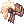
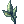
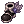

Summoner
 | |||||||||||||||||||
|---|---|---|---|---|---|---|---|---|---|---|---|---|---|---|---|---|---|---|---|
| |||||||||||||||||||
The Summoner (Cat) class is the only class available as and exclusive to the Doram race. Summoners have 3 skill trees each leading to a major build, with additional skills available past lv 100.
The three major Summoner builds are:
- Physical damage (Animal / Life Tree) Denoted mostly by orange skills.
- Magical damage (Vegetable / Land Tree) Denoted mostly by green skills.
- Tank and support (Seafood / Sea Tree) Denoted mostly by blue skills.
Within these builds lies some room for customization mainly within the first tiers of another tree.
- Purple skills are mandatory to progress into any of these above trees almost like a first job though all can and need to be maxed out.
Player Guides
- Conan's Summoner Guide
- Lady Narnia's MH2 Doram Healer Guide
- Ced's Physical and Support Spirit Handler Guide
- Yorutia's Tank Doram Guide
Builds
Physical (Picky Peck) Build
Picky Peck builds are mostly used for end game farming and MVPs. Their damage excels against single targets by using  Picky Peck. However, Picky Peck has 1 second of Cast Time and Cast Delay, which will normally prevent spamming while playing alone. 100% reduction variable casting time will cause delays every time you double casting. To counter this you're heavily encouraged to use 2 Chubby Earthworm Talisman, to eliminate its cast time and increase its damage, as well as making use of After Cast Delay reduction gears and taking advantage of
Picky Peck. However, Picky Peck has 1 second of Cast Time and Cast Delay, which will normally prevent spamming while playing alone. 100% reduction variable casting time will cause delays every time you double casting. To counter this you're heavily encouraged to use 2 Chubby Earthworm Talisman, to eliminate its cast time and increase its damage, as well as making use of After Cast Delay reduction gears and taking advantage of  A Poem of Bragi's 30% After Cast Delay reduction. To make yourself super spammable, you need 95% variable casting time (Don't reach 100% variable casting time as it will cause animation delays every double casting chance of Picky Peck as well as 193 ASPD and 86% after cast delay in order to super spam.
A Poem of Bragi's 30% After Cast Delay reduction. To make yourself super spammable, you need 95% variable casting time (Don't reach 100% variable casting time as it will cause animation delays every double casting chance of Picky Peck as well as 193 ASPD and 86% after cast delay in order to super spam.
The most important aspect of this build is to have a ton of attack stacked with ranged damage increases since that's where your damage comes from after equipping 2 Chubby Earthworm Talisman and increase your base DEX. However, cast delay reduction will take higher priority over other stats.
Physical Stats
| Stat | Suggestion | Notes |
|---|---|---|
| STR | 120 | Increases damage output. Increases Weight limit.
Your main source of damage still comes from this stat even if you use Chubby Earthworm Talisman. |
| AGI | 100-120 | Increases FLEE, ASPD and reduces recast delay (mostly under Poem of Bragi / Magical Strings).
Aim to get 193 aspd with |
| VIT | 90 | Increases max HP and Soft DEF.
While the optimal build would be something with 100 total VIT to prevent getting some annoying status, it will be hard to have everything thus making this sort of a secondary stat to care even in the end game. |
| INT | Leftovers | The rest to reduce variable cast time, increase max SP and Soft MDEF.
It's pretty much useless unless you focus a bit on sp regen and you're doing some solo farm. |
| DEX | 120 | If you're going Picky Peck, you're pretty much forced to use Chubby Earthworm Talisman as accessories to increase its damage. Due to that, you should at least invest 120 DEX although nothing stops you from going higher since each point of base DEX increases its damage (DEX from other sources make no difference besides adding 1 atk each 5 points of DEX).
Always balance it along STR and remember that a Doram can't have more than 125 base DEX. |
| LUK | 1-55 | Optional.
Increases HIT and ATK (besides other things that a Picky Peck doesn't care). Stick to multiples of 3 (total, not base) if you want a bit more of atk and hit. |

Magical (Silvervine Stem Spear) Build
Good for PvP combat and dealing elemental damage.
TBA
Magic Stats
- STR - ?? Increases Weight limit.
- AGI - ??
- VIT - 95+(100 with bonuses for resistances) to increase max HP and Soft DEF.
- INT - 120 For damage and to reduce variable cast time, increase max SP and Soft MDEF.
- DEX - 120 To reduce cast time
- LUK - ??
Tank and Support Build
TBA
Tank/Support Stats
- STR - ?? Increases damage output. Increases Weight limit.
- AGI - ??
- VIT - ??
- INT - ??
- DEX - ??
- LUK - ??
Stats
| Stat | Notes |
|---|---|
| Strength | Description of what this stat does for your class, is it needed? is it important? Why do you need it? (Brief description, go more in depth in the actual build section).
Every 1 point;
|
| Agility | Description of what this stat does for your class, is it needed? is it important? Why do you need it? (Brief description, go more in depth in the actual build section).
Every 1 point;
Every 5 points;
|
| Vitality | Description of what this stat does for your class, is it needed? is it important? Why do you need it? (Brief description, go more in depth in the actual build section).
Every 1 point;
Every 2 points;
Every 5 points;
|
| Intelligence | Description of what this stat does for your class, is it needed? is it important? Why do you need it? (Brief description, go more in depth in the actual build section).
Every 1 point;
|
| Dexterity | Description of what this stat does for your class, is it needed? is it important? Why do you need it? (Brief description, go more in depth in the actual build section).
Every 1 point;
Every 5 points;
|
| Luck | Description of what this stat does for your class, is it needed? is it important? Why do you need it? (Brief description, go more in depth in the actual build section).
Every 1 point;
Every 3 points;
Every 5 points;
Every 10 points;
|
Skills
Summoner
| Skill | Type | Properties | Description |
|---|---|---|---|
| New Basic Skill | Passive |
|
Adds all the effects of a Novices  Basic Skill into a singular point. Basic Skill into a singular point.
|
 Bite Bite
|
Damage |
|
Bite an enemy to deal damage. This skill will deal additional damage to enemies with less health.
|
| Hide | Support |
|
Hide from enemies inside a bush.
|
 Scratch Scratch
|
Damage |
|
Scratch an enemy with the chance to cause the Bleeding status.
|
 Stoop Stoop
|
Support |
|
Buff yourself for 6 seconds, reducing incoming damage by 90%.
|
 Lope Lope
|
Support |
|
Leap high and far into the air, letting you jump over obstacles.
|
 Spirit Marble Spirit Marble
|
Passive |
|
Increases Max HP and SP.
|
 Silvervine Stem Spear Silvervine Stem Spear
|
Damage |
|
Pierce an enemy using a Silvervine Stem. Has a chance to cause the Bleeding status.
Different skill levels uses different properties of magic.
|
| Picky Peck
|
Damage |
|
Command the angry spirits of picky's to strike a target from afar.
|
 Fresh Shrimp Fresh Shrimp
|
Support |
|
Absorb the spirit of small fresh shrimp to recover small amounts of HP every few seconds for 2 minutes.
|
| Soul Attack | Passive |
|
Increase the attack range of normal attacks to 15 cells. |
 Silvervine Root Twist Silvervine Root Twist
|
Support |
|
Bind an enemy into place with the spirit of the silvervine root.
Enemies caught in the roots will take 100 Fixed Poison property damage every second.
|
 Arclouse Dash Arclouse Dash
|
Support |
|
Absorb the spirit of the Arclouse to become very agile. Increases your Movement speed and AGI.
|
 Bunch of Shrimp Bunch of Shrimp
|
Support |
|
Summon a swarm of shrimp to increase you and your parties ATK% and MATK%.
|
 Catnip Meteor Catnip Meteor
|
Damage |
|
The spirit of giant catnip is dropped from a great height to come down and damage enemies.
Deals neutral property magic damage to all enemies hit.
|
 Scar of Tarou Scar of Tarou
|
Damage |
|
Inflict the injury of a country mouses wounded spirit onto a target.
This skill will apply a debuff on the target called [Bite Wound].
|
 Tuna Belly Tuna Belly
|
Support |
|
Absorb delicious tuna to restore a portion of the targets Max HP.
|
 Catnip Powdering Catnip Powdering
|
Support |
|
Catnip powder is spread among an area reducing ATK and MATK by 50%, and decreasing Movement speed.
HP and SP recovery is increased in this area.
|
 Lunatic Carrot Beat Lunatic Carrot Beat
|
Damage |
|
Carrots are raised in the anger of the Lunatic, dealing damage to all enemies hit.
From base level 100, deals additional damage depends on user's base level and Str.
|
 Tuna Party Tuna Party
|
Support |
|
The spirit of the delicious tuna protects the target for 30 seconds.
This skill will block physical and magical damage until the buff durability runs out. The durability of the buff depends on the targets Max HP.
|
 Power of Land Power of Land
|
Passive |
|
The spirits retain some of the power of the earth.
|
 Power of Life Power of Life
|
Passive |
|
The spirits retain some of the power of the life.
|
 Power of Sea Power of Sea
|
Passive |
|
The spirits retain some of the power of the sea.
|


| Advanced Skills | |||
|---|---|---|---|
| Skill | Type | Properties | Description |
 Hiss Hiss
|
Support |
|
Be on high alert to avoid threats.
Increase you and your parties Perfect Dodge and Movement speed.
|
 Grooming Grooming
|
Support |
|
Heal yourself by licking your fur. Increases you Flee for a short time.
|
 Meow Meow Meow Meow
|
Support |
|
Awakens the hunting insticts of allies by chattering.
Grants all party members on screen +100 ATK, +100 MATK, and increased movement speed.
|
 Chattering Chattering
|
Support |
|
Get excited and awaken your hunting spirit.
Gives +100 ATK, +100 MATK, and increases you movement speed. |
 Power of Flock Power of Flock
|
Support |
|
Terrify enemies by showing how strong you are!
Casts Fear and Freezing status on all enemies by chance.
|
 Nyang Grass Nyang Grass
|
Support |
|
Neutralize enemy defense in an area.
Reduce players equipment DEF and MDEF to 0. If used on monsters, it will reduce their DEF and MDEF by 50% instead.
|
 Purring Purring
|
Support |
|
Heals everyone with a pleasant sound.
Applies the effects of
|
 Spirit of Savage Spirit of Savage
|
Damage |
|
Summon the soul of the Savage to rush and attack an enemy, dealing damage to all enemies in it's path.
|
 Tasty Shrimp Party Tasty Shrimp Party
|
Support |
|
Applies the Fresh Shrimp skill to yourself and all party members.
The caster recieves [Blessing of Shrimp] buff.
|
| Spirit of Land | Passive |
|
Absorb the spirit of the earth to strengthen Plant based skills.
|
 Spirit of Life Spirit of Life
|
Passive |
|
Absorb the spirit of life to strengthen Animal based skills.
Increases the damage of the following skills depending on the casters remaining HP; |
 Spirit of Sea Spirit of Sea
|
Passive |
|
Absorb the spirit of the sea to strengthen Seafood based skills.
|
Equipment
Headgears
Upper
| Item | Minimum level to use | Way to Obtain | Notes |
|---|---|---|---|
| Illusion Hot-blooded Headband [1] | 120 | Illusion of Teddy Bear | A headgear which symbolizes hot-blooded challenge and battle vigor.
Str + 2.
|
 Temporal Circlet (Summoner) [1] Temporal Circlet (Summoner) [1]
|
170 | Glast Heim: Challenge Mode | A circlet orned with jewel and ore. It was created by a crack in time.
Hugin empowered it with mystical energy. Atk + 15 per 2 refine rate.
|
 Chung Cap [1] Chung Cap [1]
|
130 | Gold Coins Shop/Endeavor Token Shop | Atk + 20 per 2 refine rate.
If refine rate is 7 or higher, reduces variable casting time by 15%. If refine rate is 9 or higher, increase long ranged physical damage by 15%. If refine rate is 11 or higher, increases physical damage against small and medium size enemies by 15%, reduces fixed casting time by 0.2 seconds. When equipped with Saphir Mace-OS, Atk + 30, increases Cart Cannon damage by 4% per 2 refine rate of weapon. When equipped with Virtual Bow-OS, reduces cooldown of Arrow Storm by 2.5 seconds, increases bow damage by 7% per 2 refine rate of weapon. When equipped with Blasti-OS, MaxHP + 5%, reduces physical and magical damage taken from small size enemies by 3% per 2 refine rate of weapon.
|
 Illusion Goibne's Helm [1] Illusion Goibne's Helm [1]
|
130 | Illusion of Luanda | Vit + 3, Mdef + 3. If refine rate is 7 or higher, Vit + 5.
|
 Heart Wing Headband [1] Heart Wing Headband [1]
|
120 | Gold Coin Shop/Endeavor Token Shop | Decorated with tiny hearts and lace wings. Skill delay -5%, SP comsuption -10%; |
|  Fancy Feather Hat [1] | None | Gold Coin Shop/Endeavor Token Shop | Atk + 15 per 2 refine rate. If refine rate is 7 or higher, increases long range physical damage by 7%. |
 Fox Ear Ribbons [1] Fox Ear Ribbons [1]
|
50 | Nova Shop | Cute ears made to resemble those of a fox. AGI + 2, ASPD + 10% |


Middle
| Item | Minimum level to use | Way to Obtain | Notes |
|---|---|---|---|
 New Wave Sunglasses [0] New Wave Sunglasses [0]
|
30 | Custom Headgear Quest |
Sunglasses with a futuristic design. Reduces the global delay of skills by 10%.
|
 Magical Booster [1] Magical Booster [1]
|
30 | Magical Booster | A helm which increases the magical powers of the wearer by controlling the brainwaves.
It has voice recognition function and interacts with other equipment!
|
Lower
| Item | Minimum level to use | Way to Obtain | Notes |
|---|---|---|---|
 Rosary In Mouth Rosary In Mouth
|
None | Custom Headgear Quest | A rosary which has received its powers from the apostle of God. It's filled with mysterious powers.
All stats + 1 ATK + 5 MATK + 5 MDEF + 2 |
 Magical Rosary In Mouth Magical Rosary In Mouth
|
None | Headgear Awakening Quest | A rosary which has received its powers from the apostle of God. It's filled with mysterious powers.
All stats + 2 Perfect Dodge + 2 |
 Vicious Mind Aura Vicious Mind Aura
|
170 | EDDA Biolabs Dropped by Nameless Swordsman MVP. | [ Fallen Warrior Manteau [1]] Fallen Warrior Manteau [1]]
Atk + 5 per 30 base Str. |
 Scarlet Rose Scarlet Rose
|
None | Gold Coin Shop | A crimson colored rose. Be sure to check for thorns before putting this in your mouth.
ATK + 1%, MATK + 1% Max SP + 30 |
 Gangster Scarf Gangster Scarf
|
None | Custom Headgear Quests | A gangster's red scarf. ATK +5 |
 Well-Chewed Pencil Well-Chewed Pencil
|
None | Nova Shop | A popular snack while taking tests. It makes one look more studious but, its days may be numbered if it stays in somebody's mouth any longer. Concept created during the Summer 2008 |
Armor
| Item | Minimum level to use | Way to Obtain | Notes |
|---|---|---|---|
 Automatic Armor A-type [1] Automatic Armor A-type [1]
|
160 | Automatic Armors and Enchants | Atk + 125. Atk + 10 per 2 refine rate.
|
 Illusion Armor A-type [1] Illusion Armor A-type [1]
|
130 | Illusion Equipments and Enchants | Atk + 100. Atk + 10 per 2 refine rate.
|
 Doram Private Suit [1] Doram Private Suit [1]
|
100 | Main Office 1st floor Doram Shop Cost 100,000 zeny. Also drops from several mobs. | A neat uniform that's the choice of Dorams. Max HP + 500, Max SP + 100. |


Weapons
Dorams use weapons specific to their class called Foxtails. Some are magic based and some are physical and/or ranged damage base. While few in number they can greatly increase power of attacks.
Basic or Combination weapons
| Item | Minimum level to use | Obtained By | Notes |
|---|---|---|---|
| Foxtail Sprout Wand | 0 | Given at start. | Unrefineable. |
 Eden Foxtail Staff II Eden Foxtail Staff II
|
40 | Eden Group Equipment Quests | Adds DEX, INT, MATK and long ranged damage bonus. |
 Eden Foxtail Staff III Eden Foxtail Staff III
|
60 | Eden Group Equipment Quests | Adds DEX, INT, MATK and long ranged damage bonus. |
Magic based weapons
| Item | Minimum level to use | Obtained By | Notes |
|---|---|---|---|
| Beginner Foxtail Staff [1] | 3 | Quest. | Adds MATK and max HP. |
| Enriched Foxtail Staff [1] | 12 | Drop (Sweet Roda Frog) | Adds MATK and max SP. |
 Dragonfly Sitting Foxtail Staff [1] Dragonfly Sitting Foxtail Staff [1]
|
20 | Drop (Scout Basilisk) | Adds MATK and max HP and SP and INT. |
 Wondrous Foxtail Staff [2] Wondrous Foxtail Staff [2]
|
100 | Drop (Numerous monsters) | Adds MATK and SP per 3 refine levels and MATK and ATK bonuses from refine levels 7-10. |
 Meowmeow Foxtail [2] Meowmeow Foxtail [2]
|
100 | Ancient Hero | Adds per 2 refine levels 10 MATK/ATK and 2%MATK/ATK per 3 refine levels of the weapon. If refine rate = 7 increases damage of Lunatic Carrot Beat and Silvervine Stem Spear by 15%, if refine rate = 9 reduces variable cast time by 10% and increases attack speed by 10%, if refine rate = 11 increases damage of Catnip Meteor and Picky Peck by 15%. When equipped with  Ancient Hero Boots [1] when dealing magical/physical damage, has a chance to increase ATK/MATK by 15% and LUK+20 for 7 seconds. Ancient Hero Boots [1] when dealing magical/physical damage, has a chance to increase ATK/MATK by 15% and LUK+20 for 7 seconds.
|
 Electric Fox-OS [2] Electric Fox-OS [2]
|
130 | Illusion Equipments and Enchants | Adds MATK and MATK%, if refine = 7 increased Silvervine Stem Spear damage by 20%, if refine rate = 9 reduced 10% variable cast time and increased fire, earth, wind, water and ghost property magical damage by 15%, if refine rate = 11 increases Catnip Meteor damage by 30%.
|
 Magic Foxtail Staff [2] Magic Foxtail Staff [2]
|
140 | Drop (Antler Scaraba and Assault Basilisk) | Adds MATK and SP per 2 refine levels and MATK and ATK bonuses from refine levels 7-10. |
 Magic Yellow Foxtail Staff [1] Magic Yellow Foxtail Staff [1]
|
175 | Drop (Pom Spider, Fruit Pom Spider) | Adds MATK per 2 refine levels and MATK and ATK bonuses from refine levels 7-10. When using Fresh Shrimp skill, adds a chance to auto cast Level 1 Arclouse Dash, or activate learned level. When using Silvervine Stem Spear skill, adds a chance to auto cast Level 1 |
 Safety Foxtail [2] Safety Foxtail [2]
|
170 | Elmen at Einbech | Matk + 350, can't be destroyed. Atk + 7%, Matk + 7%. |
| Addiction Plant [2] | 150 | Sin Weapons and Enchants Dropped by Verporte and Beta Cleaner A | Can't be destroyed. Matk + 330. |
 Patent Meowmeow Foxtail [2] Patent Meowmeow Foxtail [2]
|
150 | Ancient Juperos | Can't be destroyed. Matk + 350. |
Ranged or Physical based
| Item | Minimum level to use | Obtained By | Notes |
|---|---|---|---|
 Long Foxtail Staff [1] Long Foxtail Staff [1]
|
12 | Drop (Sweet Roda Frog) | Adds max HP and long ranged damage bonus. |
 Large Foxtail Staff [1] Large Foxtail Staff [1]
|
20 | Drop (Scout Basilisk) | Adds DEX, max HP and SP and long ranged damage bonus. |
| Foxtail Model [3] | 60 | Drop (Metaller) | Adds DEX and max SP per 3 refine levels, max HP and long ranged damage bonus. |
 Fine Foxtail Replica [2] Fine Foxtail Replica [2]
|
100 | Drop (Numerous monsters) | Adds max HP and long ranged damage bonus, also per 3 refine levels max SP and DEX and MATK and ATK bonuses from refine levels 7-10. |
| Meowmeow Foxtail [2]
|
100 | Ancient Hero | Adds per 2 refine levels 10 MATK/ATK and 2%MATK/ATK per 3 refine levels of the weapon. If refine rate = 7 increases damage of Lunatic Carrot Beat and Silvervine Stem Spear by 15%, if refine rate = 9 reduces variable cast time by 10% and increases attack speed by 10%, if refine rate = 11 increases damage of Catnip Meteor and Picky Peck by 15%. When equipped with Ancient Hero Boots [1] when dealing magical/physical damage, has a chance to increase ATK/MATK by 15% and LUK+20 for 7 seconds.
|
 Elaborate Foxtail Replica [2] Elaborate Foxtail Replica [2]
|
140 | Drop (Antler Scaraba and Assault Basilisk) | Adds max HP and long ranged damage bonus also per 2 refine levels, DEX and max SP and MATK and ATK bonuses from refine levels 7-10.. |
| Elaborate Yellow Foxtail Replica [1] | 175 | Drop (Charge Basilisk) | Adds max HP also long ranged damage bonus and max SP per 2 refine levels and MATK and ATK bonuses from refine levels 7-10. When using [Picky Peck] skill, adds a chance to auto cast Level 1 Fresh Shrimp, or activate learned level.
|
| Safety Foxtail [2]
|
170 | Elmen at Einbech | Matk + 350, can't be destroyed. Atk + 7%, Matk + 7%.
|
| Patent Meowmeow Foxtail [2]
|
150 | Ancient Juperos | Can't be destroyed. Matk + 350.
|
Shields
| Item | Minimum level to use | Way to Obtain | Notes |
|---|---|---|---|
 Purified Knight's Shield [1] Purified Knight's Shield [1]
|
None | Cursed Knight Shield | Increases attack speed (reduces delay after attack by 10%). Atk + 5%, Matk + 5%.
|
 Bloody Knight's Shield [1] Bloody Knight's Shield [1]
|
None | Cursed Knight Shield | Increases attack speed (reduces delay after attack by 10%). Atk + 3%, Matk + 3%.
|
 Cursed Knight's Shield [1] Cursed Knight's Shield [1]
|
None | Cursed Knight Shield | Increases attack speed (reduces delay after attack by 10%). Atk + 3%, Matk + 3%.
|
 Mad Bunny [1] Mad Bunny [1]
|
None | Nova Shop | A rag doll that Piamette is using for both attack and defense. It looks so real and alive! |
Garment
| Item | Minimum level to use | Way to Obtain | Notes |
|---|---|---|---|
 Temporal Str Manteau [1] Temporal Str Manteau [1]
|
100 | Temporal Stat Manteaus | Atk + 10 and Atk + 1% per 2 refine rate. Increases physical damage against all size enemies by 5% per 4 refine rate.
|
| Fallen Warrior Manteau [1]
|
170 | Bio5 | A legendary manteau that has been worn by those who fought bravely and were killed in battle. Max HP + 1% per 2 upgrade levels of the item.
|
 Illusion Engine Wing B-type [1] Illusion Engine Wing B-type [1]
|
130 | Illusion Equipments and Enchants | MaxHP + 1000. MaxHP + 100 per 2 refine rate.
|
| Doram Private Manteau [1] | 100 | Main Office 1st floor Doram Shop Costs 100,000 zeny. Also drops from several mobs. | Doram cloaks made to fit snuggly to a small body FLEE + 5. |
 Heroic Backpack [1] Heroic Backpack [1]
|
None | Gold Coins Shop Valor Shop Retired Hunter's Shop |
A backpack befitting of any hero. Enables the use of level 1 Greed |


Footgear
| Item | Minimum level to use | Way to Obtain | Notes |
|---|---|---|---|
 Automatic Leg A-type [1] Automatic Leg A-type [1]
|
160 | Automatic Equipments and Enchants | MaxSP + 250 MaxSP + 20 per 2 refine rate.
|
 Illusion Leg A-type [1] Illusion Leg A-type [1]
|
130 | Illusion Equipments and Enchants | MaxSP + 200 MaxSP + 20 per 2 refine rate.
|
 Doram Private Shoes [1] Doram Private Shoes [1]
|
100 | Main Office 1st floor Doram Shop costs 100,000. Also drops from several monsters. | Doram shoes designed to fit small feet. Max HP + 100, Max SP + 50. |
 Hero Silverleather Boots [1] Hero Silverleather Boots [1]
|
160 | Prize of Hero | Ranged Damage +5%. Ranged Damage +1% per refine level past +8 up to +13. |


Accessories
| Item | Minimum level to use | Way to Obtain | Notes |
|---|---|---|---|
 Fresh Grass Necklace [1] Fresh Grass Necklace [1]
|
100 | Dropped by Sting, Contaminated Sting | Reduces Scar of Tarou CD and adds Perfect Dodge. Useable for Scar of Tarou builds. |
 Cute Grass Necklace [1] Cute Grass Necklace [1]
|
100 | Dropped by Stapo | Reduces Tuna Party CD and adds Heal Power. Nullifies the CD of LvL 1 Tuna Party if 2 of these are equipped making it the go to for tank builds. |
 Charm Grass Necklace [1] Charm Grass Necklace [1]
|
100 | Dropped by Roween | Reduces Variable Cast time of Catnip Meteor and adds some MDEF. Not suitable for Catnip Meteor builds since there is a set for it. |
 Shining Eggplant Talisman [1] Shining Eggplant Talisman [1]
|
100 | Doram Equipment Exchange] | Reduces Silvervine Stem Spear Variable Cast time by 50% and adds damage per INT and Skill Level of Silvervine Stem Spear. Recommended to get 2 of those when playing Silvervine Stem Spear Doram. |
 Fresh Tuna Talisman [1] Fresh Tuna Talisman [1]
|
100 | Doram Equipment Exchange | Reduces Tuna Party CD and adds a chance to autocast highest LvL known of Tuna Party when attacked by melee physical attacks. Can be used for Tank builds aswell. |
| Chubby Earthworm Talisman [1] | 100 | Doram Equipment Exchange | Reduces Picky Peck Variable Cast time by 50% and adds damage per DEX and Skill Level of Picky Peck. Recommended to get 2 of those when playing Picky Peck Doram. |
| Lesser Tuna Talisman [1] | 100 | Doram Equipment Exchange | Doesnt add much on its own, but when used with the Doram Private Set and a Cute Grass Necklace adds %HP %SP %Healing and gives the use of LvL 5 Heal. The accessory for support dorams at LvL 100. |
 Lesser Leaf Talisman [1] Lesser Leaf Talisman [1]
|
100 | Doram Equipment Exchange | Doesnt add much on its own, but when used with the Doram Private Set and a Charm Grass Necklace adds %HP %SP %Catnip Meteor Damage. The accessory for magic dorams at LvL 100. Can be used for leveling since of the AoE. |
 Lesser Bunny Talisman [1] Lesser Bunny Talisman [1]
|
100 | Doram Equipment Exchange | Doesnt add much on its own, but when used with the Doram Private Set and a Fresh Grass Necklace adds %HP %SP %Lunatic Carrot Beat Damage. The accessory for physical dorams that want more damage on their AoE at LvL 100. |
 Intermediate Tuna Talisman [1] Intermediate Tuna Talisman [1]
|
140 | Doram Equipment Exchange | Upgraded version of the Lesser version. Not much else to say here. |
|  Intermediate Leaf Talisman [1] | 140 | Doram Equipment Exchange | Upgraded version of the Lesser version. Not much else to say here. |
 Intermediate Bunny Talisman [1] Intermediate Bunny Talisman [1]
|
140 | Doram Equipment Exchange | Upgraded version of the Lesser version. Not much else to say here. |
 Superior Tuna Talisman [1] Superior Tuna Talisman [1]
|
175 | Doram Equipment Exchange | Upgraded version of the Intermediate version. Not much else to say here. |
 Superior Leaf Talisman [1] Superior Leaf Talisman [1]
|
175 | Doram Equipment Exchange | Upgraded version of the Intermediate version. Not much else to say here. |
 Superior Bunny Talisman [1] Superior Bunny Talisman [1]
|
175 | Doram Equipment Exchange | Upgraded version of the Intermediate version. Not much else to say here. |
Shadow Gears
| Item | Way to Obtain | Notes |
|---|---|---|
 Physical Doram Shadow Armguard Physical Doram Shadow Armguard
|
High Rank Shadow Gear (Monster Hunter) | A pair of gloves that can draw the wearer's potential ability.
For each refine level: Increases ranged physical attack by 1%. When Refine Level +7: Perfect Dodge +2 Refine Level +9: Perfect Dodge +3 |
 Physical Doram Shadow Buckler Physical Doram Shadow Buckler
|
High Rank Shadow Gear (Monster Hunter) | A small shield worn on the arm for additional defense. Needs a complete set to have bonus effect.
ATK +3% When using Reduces skill cooldown by 0.2 second of Refine Level +7:
Increases damage of Refine Level +9:
Increases damage of When combined with Physical Doram Shadow Armguard: All Stats +3 MaxHP +2% MaxSP +2% Reduces SP cost of all skills by 10%. |
 Penetration Ring Penetration Ring
|
High Rank Shadow Gear (Monster Hunter) | A sacred earring which is believed to protect its wearer. It also draws the wearer's potential abilities.
While on the Savage Coast, the effect of this piece is doubled. Pierces physical defense of Normal and Great monsters by 5%. For each 2 refine levels: Pierces physical defense of Normal and Great monsters by 1%. |
 Penetration Necklace Penetration Necklace
|
High Rank Shadow Gear (Monster Hunter) | A sacred necklace which is believed to protect its wearer. It also draws the wearer's potential abilities.
While on the Savage Coast, the effect of this piece is doubled. Pierces physical defense of Normal and Great monsters by 5%. For each 2 refine levels: Pierces physical defense of Normal and Great monsters by 1%. |
 Reload Shadow Boots Reload Shadow Boots
|
High Rank Shadow Gear (Monster Hunter) | A pair of shoes worn on top of normal shoes for additional defense. Needs a complete set to have bonus effect.
Reduces after skill delay by 1%. Refine Level +7: Reduces after skill delay by 1%. Refine Level +9: Reduces after skill delay by 1%. Reload Shadow set Reload Shadow Armor Reload Shadow Shield Reload Shadow Boots Reduces after skill delay by 1%. If total refine level of entire set at least +25: Reduces after skill delay by 5%. |
 Reload Shadow Shield Reload Shadow Shield
|
High Rank Shadow Gear (Monster Hunter) | A small shield worn on the arm for additional defense. Needs a complete set to have bonus effect.
Reduces after skill delay by 1%. Refine Level +7: Reduces after skill delay by 1%. Refine Level +9: Reduces after skill delay by 1%. Reload Shadow set Reload Shadow Armor Reload Shadow Shield Reload Shadow Boots Reduces after skill delay by 1%. If total refine level of entire set at least +25: Reduces after skill delay by 5%. |
 Reload Shadow Armor Reload Shadow Armor
|
High Rank Shadow Gear (Monster Hunter) | A suit of armor worn on top of normal armor for additional defense. Needs a complete set to have bonus effect.
Reduces after skill delay by 1%. Refine Level +7: Reduces after skill delay by 1%. Refine Level +9: Reduces after skill delay by 1%. Reload Shadow set Reload Shadow Armor Reload Shadow Shield Reload Shadow Boots Reduces after skill delay by 1%. If total refine level of entire set at least +25: Reduces after skill delay by 5%. |
|  Savage Rabbit Shadow Shoes | Thanatos Tower (Hard) | A pair of shoes worn on top of normal shoes for additional defense. Needs a complete set to have bonus effect.
Increases Physical Damage against enemies of all size enemies by 5%. For each 2 Refine Levels: Increases Physical Damage against enemies of all size enemies by additional 1%. |
 Savage Rabbit Shadow Bracer Savage Rabbit Shadow Bracer
|
Nightmare Toy Factory | A sacred necklace which is believed to protect its wearer. It also draws the wearer's potential abilities.
Increases damage of For each 2 Refine Levels:
Increases damage of |
| Savage Rabbit Shadow Cufflink | Ancient Laboratory | A sacred earring which is believed to protect its wearer. It also draws the wearer's potential abilities.
Increases Ranged Physical Damage by 5%. Refine Level +7: Increases Ranged Physical Damage by additional 5%. Refine Level +9:
Decreases SP Consumption of When equipped with When equipped with For each Refine Level of both Shawl and Cufflink: Ignores physical defense of all race, except Players, by additional 1%. |
 Physical Doram Shadow Shawl Physical Doram Shadow Shawl
|
Faceworm's Nest (Hard) | A suit of armor worn on top of normal armor for additional defense. Needs a complete set to have bonus effect.
Increases damage of For each refine level:
Increases damage of When combined with Doram Physical set |

Cards
Headgears
| Item | Notes |
|---|---|
 Engkanto Card Engkanto Card
|
Increase damage on Poison property monsters by 30%.
Ignores 30% of Plant monster's Defense Rate. |
 Purple Ferus Card Purple Ferus Card
|
Atk + 3%, MaxHp - 5%, MaxSP - 5%.
Atk + 1% per 4 refine rate. [+ |
 Gemini-S58 Card Gemini-S58 Card
|
Adds 30% resistance to the Stun and Silence statuses if the wearer's base AGI is 90 or greater Adds 50% resistance to the Stone and Sleep statuses if base VIT is 80 or greater. |

Armor
| Item | Notes |
|---|---|
 Marc Card Marc Card
|
Gain protection from
the Frozen status and increase resistance to Water property by 5%. |
 Restless Dead Card Restless Dead Card
|
Atk + 20
Armor and Weapon are indestructible in battle. Set Bonus
Restless Dead Card |
 Hardworking Pitman Card Hardworking Pitman Card
|
Hit + 10, Atk + 5%.
If refine rate is 10 or higher, additional Hit + 5. |
Weapons
| Item | Notes |
|---|---|
 Contaminated Wanderer Card Contaminated Wanderer Card
|
Increases physical damage against medium and large size monsters by 30%. |
 White Knight Card White Knight Card
|
ATK + 15.
Increase damage inflicted on medium and large size monsters by 20%. |
 Magic Poisoned Plaga Card Magic Poisoned Plaga Card
|
When compounded on Staff or Two-handed Staff, increases neutral property magical damage by 10%.
If refine rate of weapon is 10 or higher, increases neutral property magical damage by additional 10%. If refine rate of weapon is 14 or higher, increases neutral property magical damage by additional 10%.
|
Shields
| Item | Notes |
|---|---|
 Khalitzburg Knight Card Khalitzburg Knight Card
|
DEF + 20.
Receive 25% less damage from medium and large size monsters. |
Garment
| Item | Notes |
|---|---|
 Brown Rat Card Brown Rat Card
|
Atk + 3 and increase ASPD by 1% for every 10 base Str.
If base Str is 120 or higher, additional Atk + 40. |
 Cenere Card Cenere Card
|
Each 10 pure AGI points increase ASPD 2%. |
 Menblatt Card Menblatt Card
|
Increases ranged damage by 1% for every 10 base DEX. |
 Empathizer Card Empathizer Card
|
Increases long ranged physical damage by 10%, MaxSP - 25%. When equipped with Dame of Sentinel Card and
|
Footgear
| Item | Notes |
|---|---|
 Blut Hase Card Blut Hase Card
|
Atk + 3%.
Increases long ranged physical damage by 5%. |
 Outrageous Cookie Card Outrageous Cookie Card
|
ATK +1%, MATK +1%, MaxHP -2%.
Every 2 refine level increment, ATK +1%, MATK +1%, MaxHP -2%. |
 Broken Gardener Beta Card Broken Gardener Beta Card
|
Luk + 2.
MaxHP + 10%, MaxSP + 10%.
Increases |
Accessories
| Item | Notes |
|---|---|
 Phen Card Phen Card
|
Enable skill casting
that cannot be interrupted by damage from enemies at the cost of increasing Variable Casting Time by 25%.
|
 Green Pitaya Card Green Pitaya Card
|
Luk + 2, Int + 1.
MaxHP + 10%, increases |
 Chaotic Acolyte Card Chaotic Acolyte Card
|
Reduces delay after skill by 4%. (Left accessories only) |
 Dark Faceworm Card Dark Faceworm Card
|
Vit - 1, Int - 1
Reduce delay after skills by 3%. [+ |

Pets
| Name | Food | Taming/obtaining | Shy/Awkward | Neutral | Cordial | Loyal | Notes |
|---|---|---|---|---|---|---|---|
  Little Isis Little Isis
|
 Pet Food Pet Food
|
Evolution of Isis |
|
|
|
|
Perfect for beginners. |
  High Orc High Orc
|
Pet Food
|
Evolution of Orc Warrior |
|
|
|
|
Another alternate option. |
  Incubus Incubus
|
 Vital Flower(Yellow) Vital Flower(Yellow)
|
Girl's Naivety |
- |
- |
- |
|
For SP regeneration. |
  Orc Hero Orc Hero
|
 Luxurious Pet Food Luxurious Pet Food
|
Evolution of High Orc |
|
|
|
|
For raw power. |
  Kiel-D-01 (Mini) Kiel-D-01 (Mini)
|
Luxurious Pet Food
|
Evolution of Aliot |
|
|
|
|
If you lack ASPD, then this pet might be good for you. |
  Phreeoni (Mini) Phreeoni (Mini)
|
Luxurious Pet Food
|
Evolution of Hode |
|
|
|
|
The best pet that has to do with Agi Up mobs since Doram's worst enemy is Agi Up since they can miss always, and this fixed with this pet |
 Bacsojin |
Luxurious Pet Food
|
Evolution of Evil Nymph |
|
|
|
|
If you lacked After Cast Delay, then it's good to have this pet. |
Costume Stones
See Costume Enchants page on how the system works on obtaining.
Costume Upper Slot
| Item | Way to Obtain | Notes |
|---|---|---|
 ATK Jade [U] ATK Jade [U]
|
Deep Sea Sropho (0.24%) Illusion of Underwater | A stone with physical attack power.
Atk + 1%. |
 Ranged Amber [U] Ranged Amber [U]
|
Chaotic Hunterfly (0.15%) Illusion of Labyrinth | Stone that raises long range damage.
Increases long range damage by 3%.
If equipped with |
 Reload Onyx [U] Reload Onyx [U]
|
Crafted from Judd 1x  Honed Amber Honed Amber1x  Primal Skull Primal Skull
|
A stone that increases Skill.
|
 SP Absorb [U] SP Absorb [U]
|
Crafted from Judd x1  SP Absorption Jade [U] SP Absorption Jade [U] x1 Honed Amber |
Stone that recovers SP. Adds a 2% chance of restoring 1% of damage as SP when performing a physical attack. |
 Doram Onyx [U] Doram Onyx [U]
|
Crafted from Judd 2x Honed Amber1x  Honed Jade Honed Jade
|
Atk + 7 and Matk + 7 for each level of Scratch user learned. NOTES: Not recommended due to low bonus plus expensive it is unless you want more Lunatic Carrot Beat damage or the meme Silvervine Stem damage. |
Costume Middle Slot
| Item | Way to Obtain | Notes |
|---|---|---|
 Attack Jade [M] Attack Jade [M]
|
Illusion Zombie (0.28%) Undead Zombie (0.28%) Illusion of Vampire |
A stone with physical attack power.
|
 Ranged Amber [M] Ranged Amber [M]
|
Abyssman (0.15%) Toxious (0.15%) Einbech Dungeon 3 |
A stone that increases damage.
|
 Reload Onyx [M] Reload Onyx [M]
|
Crafted from Judd 1x Honed Amber5x  Primal Monster Bone Primal Monster Bone
|
A stone that increases Skill. After cast delay decreased by 1%.
[+ |
 Doram Onyx [M] Doram Onyx [M]
|
Crafted from Judd 1x Honed Jade1x Honed Lapis |
Increases Lunatic Carrot Beat damage by 20%. NOTE: Unless you want to build a Lunatic Carrot Beat build, go for it. |
Costume Lower Slot
| Item | Way to Obtain | Notes |
|---|---|---|
 Resurrection Jade [L] Resurrection Jade [L]
|
Antler Scaraba (0.15%) | Stones that can be used to revive people.
|
 Kyrie Jade [L] Kyrie Jade [L]
|
Salamander (0.17%) | A stone that increases survival.
|
 Teleport Jade [L] Teleport Jade [L]
|
Gold One-Horn Scaraba and Gold Two-Horned Scaraba (0.13%) | Enables the use of Level 1  Teleport. Teleport.
|
 Attack Jade [L] Attack Jade [L]
|
Furious Snowier and Furious Ice Titan (0.20%) Illusion of Frozen | A stone with physical attack power.
|
 Ranged Amber [L] Ranged Amber [L]
|
Deep Sea Swordfish (0.13%) Illusion of Underwater |
Stone that raises long range damage.
|
 Reload Onyx [L] Reload Onyx [L]
|
Crafted from Judd 1x Honed Amber50x  Small Monster Bone Small Monster Bone
|
A stone that increases Skill.
|


Costume Garment Slot
| Item | Way to Obtain | Notes |
|---|---|---|
 Casting Onyx [G] Casting Onyx [G]
|
Crafted from Jude 1x  Minor Casting Onyx [G] Minor Casting Onyx [G]1x Honed Amber2x Honed Jade
|
A stone that increases health.
NOTE: Will become very useful in future contents. |
 SP Absorb Onyx [G] SP Absorb Onyx [G]
|
Crafted from Judd 1x  SP Absorption Jade [G] SP Absorption Jade [G]1x Honed Amber
|
Stone that recovers SP.
|
 Doram Onyx [G] Doram Onyx [G]
|
Crafted from Judd 3x Honed Amber2x Honed Jade10x  Polished Marble Polished Marble1x  Bone Fragment Bone Fragment
|
Increases Picky Peck and Catnip Meteor damage by 20%.
[+
[+
[+
|

Attack Speed Modifiers
| Base | 156 Aspd | ||||||||
 Shield Shield |
-7 | ||||||||
| 1h Staff | -20 | ||||||||